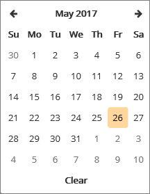
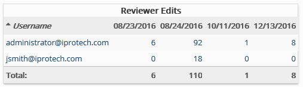

This report lists all reviewers by user name and the number of distinct actions (field editing and/or tagging) each reviewer has made on each day of the date range, for a specific date range. Can be useful in evaluating review efficiency.
Complete the following selections:
Report Title: A report title is selected by default; change the title if needed.
Start/End Dates: Select the starting and ending dates for the time period of interest by clicking in each field and selecting dates from the resulting calendars.
Use common calendar controls to select the correct dates and/or clear your selection.

